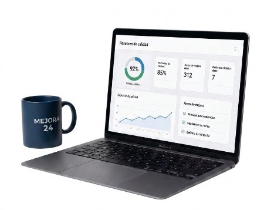

Evaluamos el estado actual de tus procesos, herramientas y prácticas para identificar brechas y oporturnidades
Revisamos en profundidad tus procesos, artefactos y métricas para asegurar estándares de calidad.
Te acompañamos de forma continua con soporte estratégico y operativo para mantener y mejorar la calidad.
Entendemos tu contexto, objetivos y desafiós.
Evaluamos tu situación actual y detectamos oportunidades.
Diseñamos un plan de acción adaptado a tus necesidades.
Ejecutamos, medimos y mejoramos juntos.
⏳ Cupos limitados por semana
Agendá un diagnóstico gratuito y detectá oportunidades de mejora.
Agendar diagnóstico